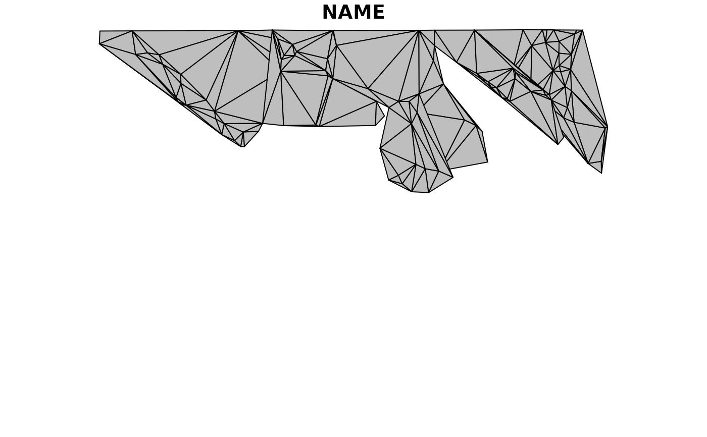
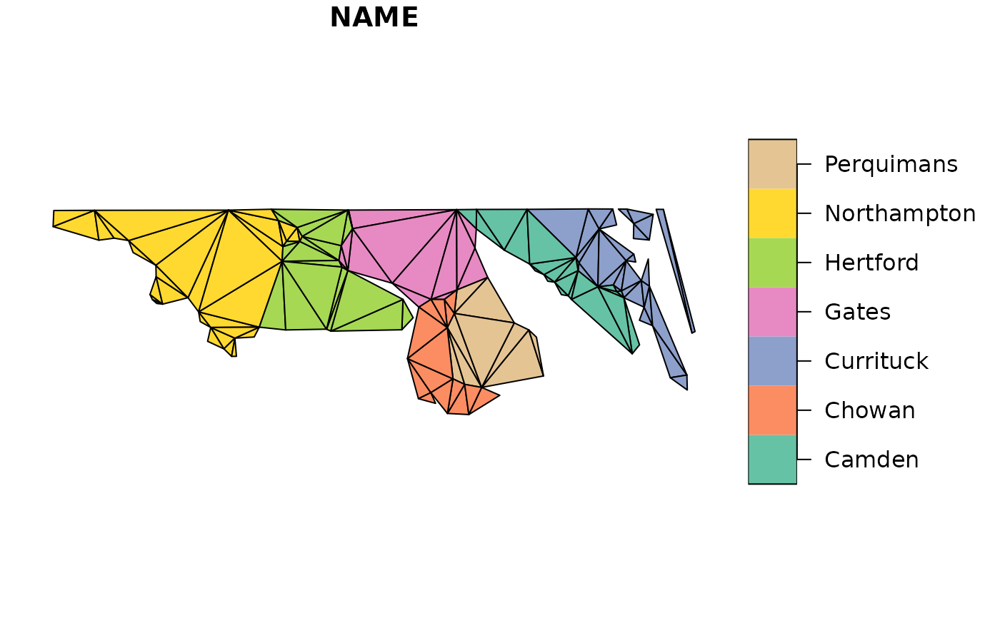

Triangulate simple features including the input edges as constraints, rather than being bounded to the convex hull.
ct_triangulate(x, ...) # S3 method for POINT ct_triangulate(x, trim = TRUE, ...) # S3 method for MULTIPOINT ct_triangulate(x, trim = TRUE, ...) # S3 method for GEOMETRYCOLLECTION ct_triangulate(x, trim = TRUE, ...) # S3 method for sfg ct_triangulate(x, trim = TRUE, ...) # S3 method for sfc ct_triangulate(x, ...) # S3 method for sf ct_triangulate(x, trim = TRUE, ...)
| x | simple feature geometry or data frame |
|---|---|
| ... | arguments for |
| trim | drop triangles that fall "outside" i.e. "holes" and non-convex regions, |
simple feature column st_sfc or data frame st_sfc
This is not a Delaunay Triangulation by default, but is "mostly-Delaunay". Use the D = TRUE option,
passed to the underlying function in RTriangle to ensure the criterion is met, as well as edge constraints.
All POLYGON, LINESTRING, MULTIPOLYGON, and MULTILINESTRING inputs (including those in GEOMETRYCOLLECTION)
are broken down into line segments that are included in the mesh. Holes are removed
by default, but can be retained with the trim argument.
The triangles are collected as POLYGONs within a GEOMETRYCOLLECTION, and in the case of an sf object
it's returned within the original input data frame.
There's no way in this package to retain the set of shared vertices, or the segment or the triangle indices. It is a fundamental feature of the standard, that this information is not represented.
Further arguments may be passed down to the underlying triangulation function triangulate.
Note that planar coordinates are assumed, no matter what projection the input is in. There's no
sensible meaning to a value for a in units m^2 for a layer that is in longitude/latitude, for those
use "area in square degrees", the straightforward meaning in planar coordinates.
These arguments are, from the documentation of that function:
a a Maximum triangle area. If specified, triangles cannot be larger than this area.
q Minimum triangle angle in degrees.
Y If TRUE prohibits the insertion of Steiner points
on the mesh boundary.
j If TRUE jettisons vertices that are not part of
the final triangulation from the output.
D If TRUE produce a conforming Delaunay
triangulation. This ensures that all the triangles in the mesh are
truly Delaunay, and not merely constrained Delaunay. This option
invokes Ruppert's original algorithm, which splits every
subsegment whose diametral circle is encroached. It usually
increases the number of vertices and triangles.
S Specifies the maximum number of added Steiner points.
V Verbosity level. Specify higher values for more detailed information about what the Triangle library is doing.
Q If TRUE suppresses all explanation of what the
Triangle library is doing, unless an error occurs.
GEOMETRYCOLLECTION as input is not yet supported.
library(sf) nc <- read_sf(system.file("shape/nc.shp", package="sf"), quiet = TRUE) nc_triangles <- ct_triangulate(nc[, c("NAME", "geometry")]) plot(nc[, "NAME"])idx <- c(4, 5, 6, 7, 8, 20, 21) op <- par(mfrow = c(2, 1)) if (packageVersion("sf") <= '0.2.8'){ nc <- st_transform(nc, "+proj=eqc +ellps=WGS84") } plot(st_triangulate(nc[idx, c("NAME", "geometry")]), col = "grey")#> Warning: st_triangulate does not correctly triangulate longitude/latitude data## Warning ct_triangulate does correctly triangulate longitude/latitude data plot(ct_triangulate(nc[idx, c("NAME", "geometry")]))